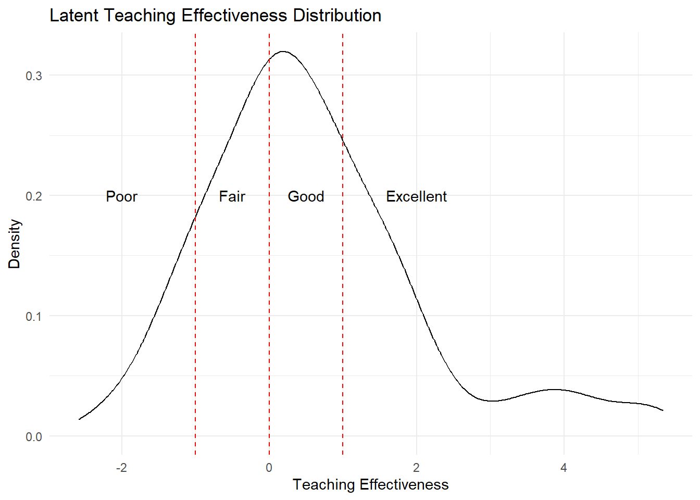
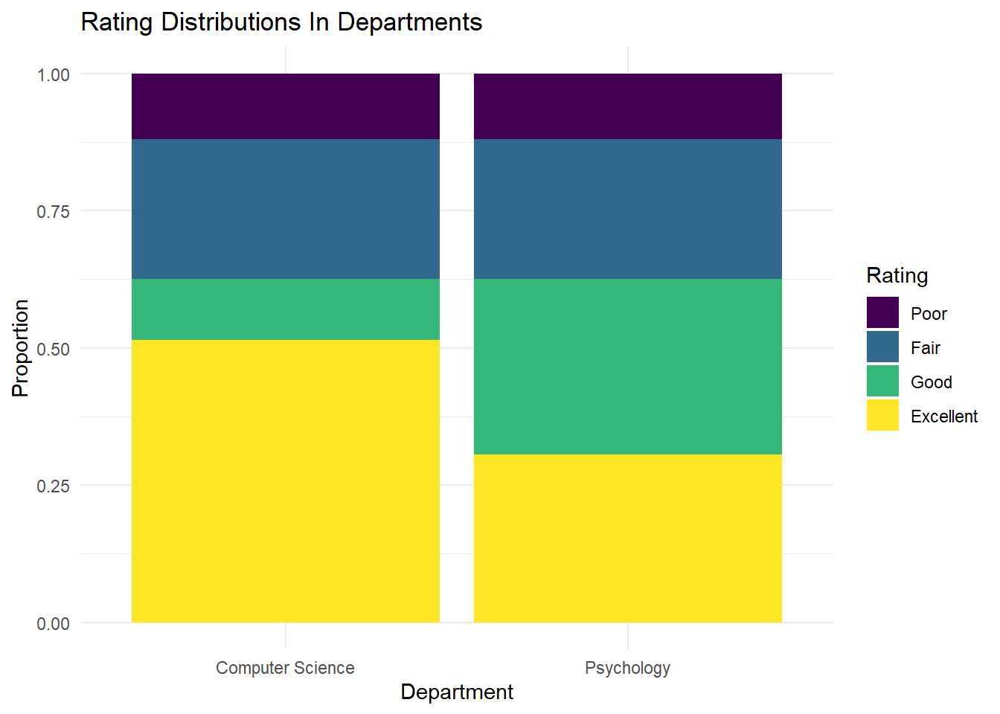
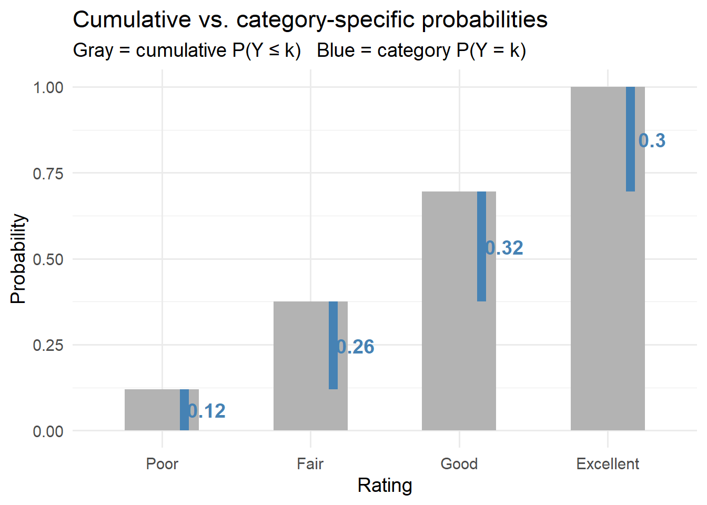
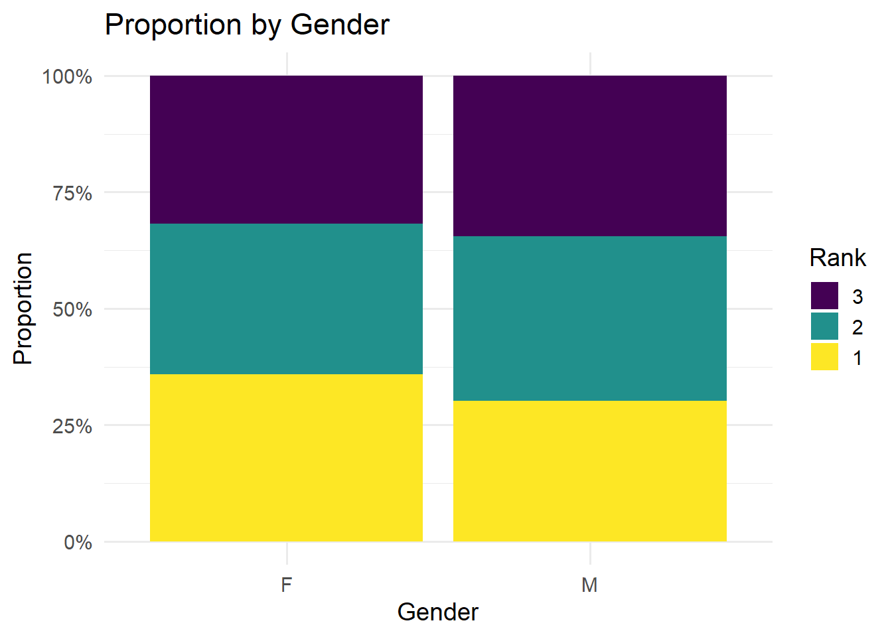
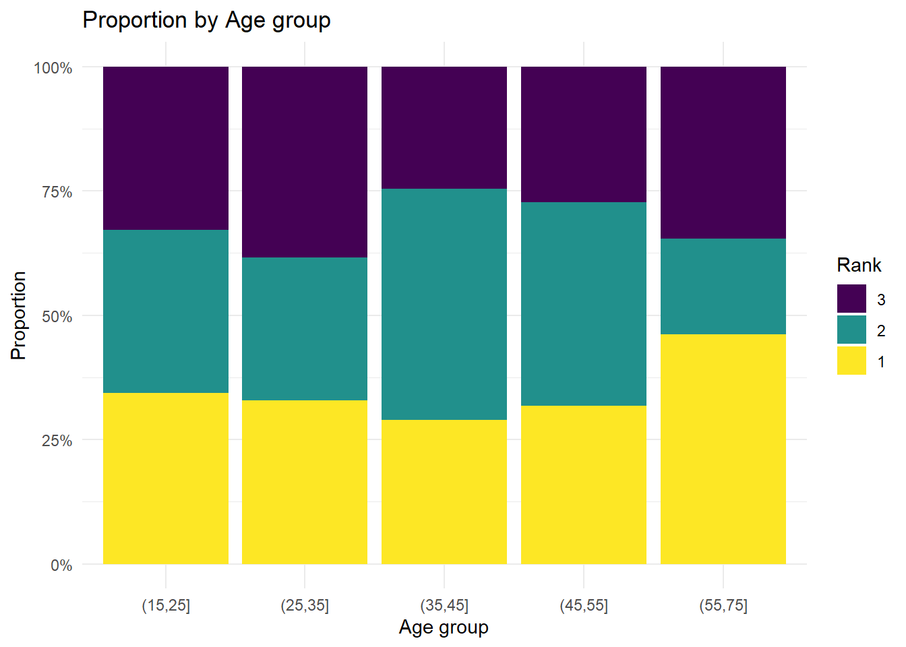
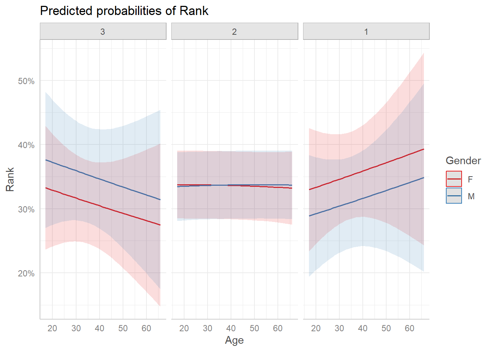
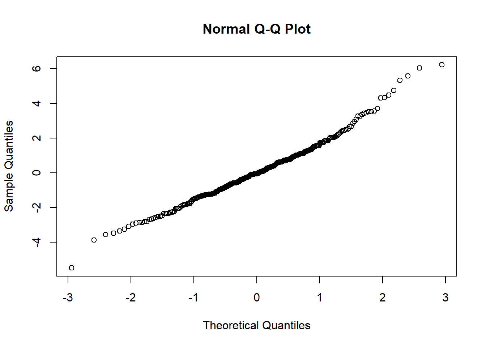

library(tidyverse)
library(ordinal)
library(marginaleffects)
library(emmeans)
library(car)
library(ggeffects)
library(knitr)
#install.packages('modelsummary')
library(modelsummary)
library(patchwork)
#install.packages('gofcat')
library(gofcat)
library(sure)
library(MASS)
options(scipen = 999)Instructions
- If you are fitting a model, display the model output in a neatly formatted table. (The
tidy()andkable()functions can help!) - If you are creating a plot, use clear labels for all axes, titles, etc.
- Commit and push your work to GitHub regularly, at least after each exercise. Write short and informative commit messages.
- When you’re done, we should be able to knit the final version of the QMD in your GitHub as an HTML.
Setup
Part 1: Understanding Thresholds Through Simulation
The Setup
A university has 10 instructors who are cross-listed — they each teach one course in the Psychology department and one in Computer Science. At the end of the semester, students in both departments rate these instructors on a 4-point scale: Poor / Fair / Good / Excellent.
Each instructor has a latent (hidden) “teaching effectiveness” score that we never observe. We only see the ordinal rating. Now, both departments evaluate the same instructors, but their evaluation forms use different descriptions for the rating categories.
Psychology’s form:
- Poor = “Did not meet basic expectations”
- Fair = “Meets minimum expectations”
- Good = “Consistently above average”
- Excellent = “Outstanding in all respects”
Computer Science’s form:
- Poor = “Did not meet basic expectations”
- Fair = “Meets minimum expectations”
- Good = “Solid and competent”
- Excellent = “Solid and competent, with minor distinction”
Notice that in CS, students have to split hairs between “Good” and “Excellent” as the descriptions barely differ. This compresses the top two categories together. Consequently almost everyone who would be “Good” in Psychology ends up rated “Excellent” in CS, not because the teaching improved, but because the scale changed.
Here’s the simulation code. Read it carefully before running it.
set.seed(504)
# 10 cross-listed instructors with latent teaching effectiveness
instructors <- tibble(
id = 1:10,
effectiveness = rnorm(10, mean = 0, sd = 1.2)
)
# Each instructor rated by 20 students per department
ratings_latent <- instructors %>%
rowwise() %>%
mutate(latent = list(rnorm(20, mean = effectiveness, sd = 1))) %>%
unnest(latent) %>%
ungroup()
# --- THREE THRESHOLDS PRODUCE FOUR CATEGORIES ---
# Psychology: balanced scale
tau_psych <- c(-1.0, 0.0, 1.0)
# Computer Science: compressed top end
tau_cs <- c(-1.0, 0.0, 0.3)
ratings <- ratings_latent %>%
mutate(
eval_psych = case_when(
latent <= tau_psych[1] ~ "Poor",
latent <= tau_psych[2] ~ "Fair",
latent <= tau_psych[3] ~ "Good",
TRUE ~ "Excellent"
),
eval_psych = ordered(eval_psych, levels = c("Poor", "Fair", "Good", "Excellent")),
eval_cs = case_when(
latent <= tau_cs[1] ~ "Poor",
latent <= tau_cs[2] ~ "Fair",
latent <= tau_cs[3] ~ "Good",
TRUE ~ "Excellent"
),
eval_cs = ordered(eval_cs, levels = c("Poor", "Fair", "Good", "Excellent"))
)Question 1.1: Visualize the latent distribution
Create a density plot of the latent scores with vertical dashed lines for Psychology’s thresholds (\(\tau_1 = -1\), \(\tau_2 = 0\), \(\tau_3 = 1\)). Label the four regions (Poor, Fair, Good, Excellent) on the plot.
TipHint: Key geoms
geom_density() for the curve, geom_vline(xintercept = ...) for the thresholds (use linetype = "dashed"), and annotate("text", x = ..., y = ..., label = ...) to place category labels in each region. You’ll need one annotate() call per label.
Code
ggplot(ratings_latent, aes(x = latent)) +
geom_density() +
geom_vline(xintercept = c(-1, 0, 1),
linetype = "dashed",
color = "red") +
annotate("text", x = -2, y = 0.2, label = "Poor") +
annotate("text", x = -0.5, y = 0.2, label = "Fair") +
annotate("text", x = 0.5, y = 0.2, label = "Good") +
annotate("text", x = 2, y = 0.2, label = "Excellent") +
labs(title = "Latent Teaching Effectiveness Distribution",
x = "Teaching Effectiveness",
y = "Density") +
theme_minimal()
Question 1.2: Identical instructors, different scales
Create side-by-side stacked bar charts showing the observed rating distributions for Psychology and CS.
The instructors didn’t change, so what did? What does this tell you about what thresholds control?
How the instructors are rated by the students changed. Different thresholds can cause different categorization based on how you rate the samples, even when latent variables are the same.
TipHint: Data wrangling
First, create a frequency table for each department using count(), rename the rating column to a shared name like category, and add a dept label column. Then bind_rows() them together. Compute proportions with mutate(prop = n / sum(n)) grouped by department. Plot with geom_col(position = "stack") mapping x = dept, y = prop, and fill = category.
Code
psych_table <- ratings %>%
count(eval_psych) %>%
rename(category = eval_psych) %>%
mutate(dept = "Psychology")
cs_table <- ratings %>%
count(eval_cs) %>%
rename(category = eval_cs) %>%
mutate(dept = "Computer Science")
both_table <- bind_rows(psych_table, cs_table) %>%
group_by(dept) %>%
mutate(prop = n / sum(n)) %>%
ungroup()
ggplot(both_table, aes(x = dept, y = prop, fill = category)) +
geom_col(position = "stack") +
labs(title = "Rating Distributions In Departments",
x = "Department",
y = "Proportion",
fill = "Rating"
) +
theme_minimal()
Exercise 1.3: What does tau live on?
The thresholds \(\tau_1 = -1\), \(\tau_2 = 0\), \(\tau_3 = 1\) are on the latent “teaching effectiveness” scale — the continuous axis you generated but would never observe in real data. The model re-expresses these same cut points as log-cumulative-odds — a transformation of the latent scale that makes the math linear. Convert between them:
- Convert the Psychology Dept thresholds to cumulative probabilities using
plogis(). What does each value mean?
Thresholds for cumulative probabilities of rating categories (e.g., good, excellent).
TipHint: What does plogis() do?
plogis() is the inverse logit. It converts log-cumulative-odds back to a probability: \(\text{plogis}(\tau) = \frac{e^\tau}{1 + e^\tau} = P(Y \leq k)\)
- Suppose you want a rating distribution where 10% are Poor, 30% Fair, 40% Good, and 20% Excellent. What thresholds would produce this? Use
qlogis().
TipHint: What does qlogis() do?
qlogis() is the logit function, which goes the other direction. Give it a cumulative probability and it returns the threshold: \(\text{qlogis}(p) = \log\frac{p}{1-p} = \tau\)
Code
# (a) Thresholds to cumulative probabilities
thresholds <- c(-1.0, 0.0, 1.0)
cumul_probs <- plogis(thresholds)
cumul_probs
# Then get category-specific probabilities
cat_probs <- diff(c(0, cumul_probs, 1))
cat_probs
# (b) Desired split to thresholds
desired_split <- c(0.10, 0.30, 0.40, 0.20)
cumul_desired <- cumsum(desired_split[1:3]) # which elements?
cumul_desired
needed_thresholds <- qlogis(cumul_desired)
needed_thresholdsCumulative probs: 0.269, 0.500, 0.731 Category probs: 0.269, 0.231, 0.231, 0.269
Cumulative at cuts: 0.10, 0.40, 0.80 Required thresholds: -2.197, -0.405, 1.386
Part 2: Manual Calculation — From Counts to Log-Cumulative-Odds
The goal of this section is to demystify model output. When you later see Poor|Fair = -1.23 in a clm() summary, you’ll think: “that’s the log-cumulative-odds I already computed by hand.”
Exercise 2.1: Build the table
Using Psychology Dept’s ratings, compute the following for each category: the count, proportion, cumulative proportion, cumulative odds, and log-cumulative-odds.
Display the result as a table using kable().
Code
hand_calc <- ratings %>%
count(eval_psych) %>% ##?
rename(category = eval_psych) %>%
mutate(
proportion = n / sum(n),
cumul_proportion = cumsum(proportion),
cumul_odds = cumul_proportion / (1 - cumul_proportion),
log_cumul_odds = log(cumul_odds)
)
hand_calc %>% kable(digits = 3)Cumulative odds = \(\frac{P(Y \leq k)}{P(Y > k)} = \frac{\text{cum\_proportion}}{1 - \text{cum\_proportion}}\)
Then take log() (natural log, not log10).
The last category (Excellent) will be Inf. This is because \(P(Y \leq \text{Excellent}) = 1\), so the odds are \(1/0 = \infty\).
Question 2.2: Compare to model output
Fit an intercept-only ordinal model on the Psychology Dept data: clm(eval_psych ~ 1, data = ratings).
Compare the model’s threshold estimates to your hand-calculated log-cumulative-odds. How do they compare, and what does this tell you about what the model is doing?
They’re identical! The model is estimating cumulative probabilities and reporting log-cumulative odds.
Code
intercept_only <- clm(eval_psych ~ 1, data = ratings)
modelsummary(intercept_only)| (1) | |
|---|---|
| Poor|Fair | -1.992 |
| (0.218) | |
| Fair|Good | -0.511 |
| (0.146) | |
| Good|Excellent | 0.824 |
| (0.154) | |
| Num.Obs. | 200 |
| AIC | 537.9 |
| BIC | 547.8 |
| RMSE | 2.71 |
Question 2.3: Cumulative probability plot
Run the code below. It visualizes the numbers you computed in Exercise 2.1, with gray bars showing cumulative probabilities and blue segments showing category-specific probabilities.
freq_table <- ratings %>%
count(eval_psych) %>%
rename(category = eval_psych) %>%
mutate(
prop = n / sum(n),
cumul_prop = cumsum(prop),
cumul_prop_lag = lag(cumul_prop, default = 0)
)
ggplot(freq_table) +
geom_col(aes(x = category, y = cumul_prop),
fill = "gray70", width = 0.5) +
geom_segment(aes(x = as.numeric(category) + 0.15,
xend = as.numeric(category) + 0.15,
y = cumul_prop_lag, yend = cumul_prop),
color = "steelblue", linewidth = 3) +
geom_text(aes(x = as.numeric(category) + 0.3,
y = (cumul_prop + cumul_prop_lag) / 2,
label = round(prop, 2)),
color = "steelblue", size = 5, fontface = "bold") +
scale_y_continuous(limits = c(0, 1), breaks = seq(0, 1, 0.25)) +
labs(
title = "Cumulative vs. category-specific probabilities",
subtitle = "Gray = cumulative P(Y ≤ k) Blue = category P(Y = k)",
x = "Rating", y = "Probability"
) +
theme_minimal(base_size = 14)
Answer these questions:
What do the gray bar and blue segment for “Fair” represent? Write them as probability statements.
The gray bar shows a cumulative probability of ‘Fair’ and below ‘Fair’ categories. There is 38% probability that the ratings will fall into ‘Fair’ or ‘Poor’ category. The blue bar, on the other hand, shows category-specific probability. There’s 26% probability that the ratings fall into ‘Fair’ category alone.
Part 3: Conceptual Questions
Question 3.1
How does the cumulative logit link function differ from the ordinary logit link used in binary logistic regression?
The cumulative logit is: \(\log\frac{P(Y \leq k)}{P(Y > k)}\)
For an outcome with \(K\) categories, how many equations does this produce? Answer in 2–3 sentences.
In binary logistic regression, the logit link models a single equation because there are only two categories. In a cumulative logit model, it models cumulative probabilities. For an outcome with k categories, it produced k-1 equations.
Question 3.2: Why not just use linear regression (aka metric models)?
Linear regression, ANOVA, and t-tests are all metric models. Metric models assume the numbers you assign to categories have equal spacing and meaningful distances, where you’re treating your scale like a ruler with evenly spaced tick marks.
Using the simulation data, code Psychology Dept ratings as numbers: Poor = 1, Fair = 2, Good = 3, Excellent = 4. Fit lm(rating_numeric ~ effectiveness). Then recode as Poor = 1, Fair = 2, Good = 3, Excellent = 10. Fit the model again.
Code
ratings_1 <- ratings %>%
mutate(rating_numeric = as.numeric(eval_psych))
model1 <- lm(rating_numeric ~ effectiveness, data = ratings_1)
modelsummary(model1)| (1) | |
|---|---|
| (Intercept) | 2.562 |
| (0.064) | |
| effectiveness | 0.452 |
| (0.047) | |
| Num.Obs. | 200 |
| R2 | 0.321 |
| R2 Adj. | 0.318 |
| AIC | 496.8 |
| BIC | 506.7 |
| Log.Lik. | -245.421 |
| F | 93.728 |
| RMSE | 0.83 |
Code
coef(model1)[2]effectiveness
0.4517783 Code
ratings_2 <- ratings %>%
mutate(rating_numeric = dplyr::recode(eval_psych,
"Poor" = 1,
"Fair" = 2,
"Good" = 3,
"Excellent" = 10))
model2 <- lm(rating_numeric ~ effectiveness, data = ratings_2)
coef(model2)[2]effectiveness
1.705881 Report both slopes. In one sentence, explain why they differ and what this reveals about metric models.
The slope of the first model (1,2,3,4) is 0.452 while the second model (1,2,3,10)’s slope is 1.706. Changing the numeric scales can affect the interpretation of ordinal outcomes.
Part 4: Modeling the GBBO Data
The data comes from the Great British Bake Off (GBBO). In each episode, bakers face a “technical challenge” where they receive a recipe with minimal instructions and are judged blind. The judges rank every baker from best to worst.
We will focus on the top 3 finishers. Rank is ordinal, as 1st is better than 2nd and 2nd is better than 3rd, but we cannot say the gap between 1st and 2nd equals the gap between 2nd and 3rd. This is the kind of data that ordinal regression is suited for.
Do Gender and Age predict how bakers rank in the technical?
gbbo <- read_csv("https://raw.githubusercontent.com/suyoghc/PSY-504_Spring-2025/refs/heads/main/Ordinal%20Regression/data/GBBO.csv")Exercise 4.1: Prepare the data
Filter to only top 3 ranks. Convert Rank to an ordered factor (1 = best, so think about the ordering). Convert Gender to a factor.
TipHint: Factor ordering
The column is called Technical Rank (with a space), so rename it first with rename(Rank = \Technical Rank`)`.
What does “higher” mean here? Rank 1 is best. You need to decide whether your ordered factor goes 1 < 2 < 3 (best to worst) or 3 < 2 < 1 (worst to best). The model interprets higher factor levels as “more” of the outcome. Think about what direction makes sense for your interpretation.
gb <- gbbo %>%
rename(Rank = `Technical Rank`) %>% # fix column name
filter(Rank %in% c(1, 2, 3)) %>%
drop_na() %>%
mutate(
Rank = ordered(Rank, levels = c(3, 2, 1)), # 3 < 2 < 1, so "higher" = better rank
Gender = factor(Gender)
)
head(gb)# A tibble: 6 × 3
Gender Age Rank
<fct> <dbl> <ord>
1 F 30 2
2 M 31 3
3 M 24 1
4 F 45 2
5 M 25 1
6 F 37 3 table(gb$Rank)
3 2 1
102 104 103 Question 4.2: Explore
Create two visualizations:
- A bar chart showing the proportion of bakers in each rank by Gender.
- A bar chart showing the proportion of bakers in each rank by Age (bin Age into groups using
cut()).
TipHint: Proportional bar charts
geom_bar(position = "fill") gives proportions instead of counts. Map x = Gender (or your age groups) and fill = Rank. For part (b), create age bins with something like cut(Age, breaks = c(15, 25, 35, 45, 55, 75)) inside a mutate() before plotting.
Code
#a
ggplot(gb, aes(x = Gender, fill = Rank)) +
geom_bar(position = "fill") +
scale_y_continuous(labels = scales::percent_format()) +
labs(
title = "Proportion by Gender",
x = "Gender",
y = "Proportion"
) +
theme_minimal(base_size = 14)
Code
#b
gb_age <- gb %>%
mutate(AgeGroup = cut(Age, breaks = c(15, 25, 35, 45, 55, 75)))
ggplot(gb_age, aes(x = AgeGroup, fill = Rank)) +
geom_bar(position = "fill") +
scale_y_continuous(labels = scales::percent_format()) +
labs(
title = "Proportion by Age group",
x = "Age group",
y = "Proportion"
) +
theme_minimal()
Question 4.3: Build models
Fit the following models using clm() from the ordinal package:
- Model 0: Intercept only —
Rank ~ 1 - Model 1:
Rank ~ Gender - Model 2:
Rank ~ Gender + Age - Model 3:
Rank ~ Gender * Age
For Model 2:
Report the threshold estimates. What do they represent?
3|2 is -0.6005 (log-odds of rank being third place) and 2|1 is 0.8048 (log-odds of rank being third or second place).
Exponentiate the coefficients. Interpret the odds ratio for
Agein one sentence.When age increases 1 year, the odds of being in a higher rank increase 1.0056%(?).
Using Model 2, what is the predicted probability of Rank 1 for a 30-year-old female? Use
predictions()from themarginaleffectspackage.34.6%. Have we learned how to use this function..?
TipHint: Interpreting thresholds
The thresholds are the log-cumulative-odds of \(P(Y \leq k)\) when all predictors are zero. They define the baseline distribution — where the cuts fall before any predictor shifts the distribution.
m0 <- clm(Rank ~ 1, data = gb)
m1 <- clm(Rank ~ Gender, data = gb)
m2 <- clm(Rank ~ Gender + Age, data = gb)
m3 <- clm(Rank ~ Gender * Age, data = gb)
summary(m2)formula: Rank ~ Gender + Age
data: gb
link threshold nobs logLik AIC niter max.grad cond.H
logit flexible 309 -338.86 685.72 3(0) 1.05e-10 2.9e+04
Coefficients:
Estimate Std. Error z value Pr(>|z|)
GenderM -0.190952 0.210607 -0.907 0.365
Age 0.005618 0.009100 0.617 0.537
Threshold coefficients:
Estimate Std. Error z value
3|2 -0.6005 0.3493 -1.719
2|1 0.8048 0.3507 2.295exp(coef(m2)) 3|2 2|1 GenderM Age
0.5485392 2.2362995 0.8261722 1.0056339 predictions(m2, newdata = data.frame(Gender = "F", Age = 30))
Group Estimate Std. Error z Pr(>|z|) S 2.5 % 97.5 % Gender Age
3 0.317 0.0345 9.17 <0.001 64.1 0.249 0.384 F 30
2 0.337 0.0270 12.51 <0.001 116.9 0.284 0.390 F 30
1 0.346 0.0357 9.70 <0.001 71.5 0.276 0.416 F 30
Type: prob Part 5: Model Comparison
Question 5.1
Use anova() to compare Model 2 (no interaction) with Model 3 (interaction). Is the interaction warranted?
Yes. Model 3 is significantly better than Model 2.
TipHint: What is anova() doing here?
Each model’s parameters are estimated by maximizing its likelihood function, finding the parameter values that make the observed data as probable as possible. anova() performs a likelihood ratio test. It computes:
\[LR = -2 \log\left(\frac{L_{\text{simple}}}{L_{\text{complex}}}\right)\]
This statistic follows a chi-square distribution. A significant p-value means the complex model fits meaningfully better, so the interaction is worth keeping. A non-significant p-value means the extra parameters aren’t earning their keep, so you should prefer the simpler model.
Code
anova(m2, m3)Likelihood ratio tests of cumulative link models:
formula: link: threshold:
m2 Rank ~ Gender + Age logit flexible
m3 Rank ~ Gender * Age logit flexible
no.par AIC logLik LR.stat df Pr(>Chisq)
m2 4 685.72 -338.86
m3 5 683.28 -336.64 4.437 1 0.03517 *
---
Signif. codes: 0 '***' 0.001 '**' 0.01 '*' 0.05 '.' 0.1 ' ' 1Question 5.2
Create a publication-quality comparison table of all four models using modelsummary(). Exponentiate the coefficients so they display as odds ratios.
TipHint
Put all four models in a named list: list("Intercept only" = m0, "Gender" = m1, "Gender + Age" = m2, "Gender × Age" = m3). Pass it to modelsummary() with exponentiate = TRUE to display odds ratios and stars = TRUE to add significance stars.
Code
models <- list("Intercept only" = m0, "Gender" = m1, "Gender + Age" = m2, "Gender × Age" = m3)
modelsummary(models, exponentiate = TRUE, stars = TRUE)| Intercept only | Gender | Gender + Age | Gender × Age | |
|---|---|---|---|---|
| + p < 0.1, * p < 0.05, ** p < 0.01, *** p < 0.001 | ||||
| 3|2 | 0.493*** | 0.452*** | 0.549+ | 0.995 |
| (0.060) | (0.070) | (0.192) | (0.450) | |
| 2|1 | 2.000*** | 1.840*** | 2.236* | 4.123** |
| (0.241) | (0.279) | (0.784) | (1.895) | |
| GenderM | 0.826 | 0.826 | 3.157+ | |
| (0.174) | (0.174) | (2.124) | ||
| Age | 1.006 | 1.023+ | ||
| (0.009) | (0.013) | |||
| GenderM × Age | 0.962* | |||
| (0.018) | ||||
| Num.Obs. | 309 | 309 | 309 | 309 |
| AIC | 682.9 | 684.1 | 685.7 | 683.3 |
| BIC | 690.4 | 695.3 | 700.7 | 702.0 |
| RMSE | 1.86 | 1.86 | 1.86 | 1.85 |
Part 6: Predicted Probabilities
Mini-tutorial: marginaleffects::predictions()
The predictions() function computes predicted probabilities for specific covariate profiles. Here’s a worked example:
# Predicted probabilities for a 30-year-old female
predictions(m2,
newdata = datagrid(Gender = "F", Age = 30),
type = "prob") %>%
kable(digits = 3, caption = "Predicted P(Rank) for a 30-year-old female")| rowid | group | estimate | std.error | statistic | p.value | s.value | conf.low | conf.high | Gender | Age | Rank |
|---|---|---|---|---|---|---|---|---|---|---|---|
| 1 | 3 | 0.317 | 0.035 | 9.166 | 0 | 64.148 | 0.249 | 0.384 | F | 30 | 2 |
| 1 | 2 | 0.337 | 0.027 | 12.511 | 0 | 116.898 | 0.284 | 0.390 | F | 30 | 2 |
| 1 | 1 | 0.346 | 0.036 | 9.703 | 0 | 71.539 | 0.276 | 0.416 | F | 30 | 2 |
Question 6.1
Compare the predicted probabilities for a 25-year-old female vs. a 25-year-old male. Which gender has a higher predicted probability of Rank 1?
34% for a 25-year-old female and 29.8% for a 25-year-old male. Higher for a female!
Code
predictions(m2, newdata = data.frame(Gender = "F", Age = 25))
Group Estimate Std. Error z Pr(>|z|) S 2.5 % 97.5 % Gender Age
3 0.323 0.0386 8.36 <0.001 53.8 0.247 0.399 F 25
2 0.337 0.0270 12.52 <0.001 117.0 0.285 0.390 F 25
1 0.340 0.0394 8.62 <0.001 57.1 0.263 0.417 F 25
Type: prob Code
predictions(m2, newdata = data.frame(Gender = "M", Age = 25))
Group Estimate Std. Error z Pr(>|z|) S 2.5 % 97.5 % Gender Age
3 0.366 0.0436 8.39 <0.001 54.2 0.280 0.451 M 25
2 0.336 0.0270 12.43 <0.001 115.3 0.283 0.389 M 25
1 0.298 0.0402 7.43 <0.001 43.0 0.220 0.377 M 25
Type: prob Exercise 6.2: Verify by hand
Compute the predicted probability of Rank 3 for a 25-year-old female using the formula:
\[P(Y \leq k) = \text{plogis}(\alpha_k - \beta_1 X_1 - \beta_2 X_2)\]
Use the threshold and coefficient values from coef(m2). Confirm that your manually calculated value matches the model output.
Yes! Both 32.3%.
TipHint: The subtraction
Remember the model uses subtraction: \(\eta = \alpha_k - \beta X\). So it’s plogis(threshold - (beta_gender * 0 + beta_age * 25)). Gender = 0 if the reference level is female.
Code
summary(m2)formula: Rank ~ Gender + Age
data: gb
link threshold nobs logLik AIC niter max.grad cond.H
logit flexible 309 -338.86 685.72 3(0) 1.05e-10 2.9e+04
Coefficients:
Estimate Std. Error z value Pr(>|z|)
GenderM -0.190952 0.210607 -0.907 0.365
Age 0.005618 0.009100 0.617 0.537
Threshold coefficients:
Estimate Std. Error z value
3|2 -0.6005 0.3493 -1.719
2|1 0.8048 0.3507 2.295Code
threshold <- coef(m2)["3|2"]
threshold 3|2
-0.6004965 Code
beta_gender <- coef(m2)["GenderM"]
beta_gender GenderM
-0.190952 Code
beta_age <- coef(m2)["Age"]
beta_age Age
0.005618057 Code
plogis(threshold - (beta_gender * 0 + beta_age * 25)) 3|2
0.3227969 Part 7: Marginal Effects
Mini-tutorial: avg_comparisons()
Marginal effects answer the question: “How much does the predicted probability of each category change when I shift one predictor, holding everything else constant?”
In OLS, the slope is the marginal effect, because one unit of X always produces β units of change in Y. That’s because the model predicts Y directly, with no transformation.
In any GLM with a nonlinear link (logistic regression, Poisson, ordinal, …), the slope and the marginal effect come apart. The model estimates β on a transformed scale (log-odds, log-counts), but the relationship between that scale and probability is a curve, not a line. The same β of 0.5 might shift a probability from 0.10 to 0.15 (a 5-point change) near the tails, but from 0.45 to 0.57 (a 12-point change) near the middle. The coefficient is identical in both cases, but its impact differs because the curve is steepest in the center and flat at the extremes.
For ordinal regression specifically, there’s an added wrinkle: the marginal effect is different for each category. Age might increase P(Rank 1) while simultaneously decreasing P(Rank 3), because probability must redistribute.
avg_comparisons() handles all of this. It computes the probability-scale effect at every observation, then averages — giving you one summary per category in percentage points.
Here’s a worked example interpreting the effect of Gender:
avg_comparisons(m2, variables = "Gender", type = "prob") %>%
kable(digits = 3, caption = "Average marginal effect of Gender on each rank")| term | group | contrast | estimate | std.error | statistic | p.value | s.value | conf.low | conf.high |
|---|---|---|---|---|---|---|---|---|---|
| Gender | 3 | M - F | 0.042 | 0.047 | 0.904 | 0.366 | 1.451 | -0.049 | 0.134 |
| Gender | 2 | M - F | 0.000 | 0.003 | -0.035 | 0.972 | 0.040 | -0.006 | 0.006 |
| Gender | 1 | M - F | -0.042 | 0.046 | -0.911 | 0.362 | 1.464 | -0.133 | 0.049 |
Interpretation example: “Switching from female to male changes the probability of achieving Rank 1 by -4.2 percentage points, on average. This means males are less likely to finish first in the technical challenge than females.”
Question 7.1
Compute the average marginal effect of Age on each rank category using avg_comparisons().
Code
avg_comparisons(m2, variables = "Age", type = "prob") %>%
kable(digits = 3, caption = "Average marginal effect of Age on each rank")| term | group | contrast | estimate | std.error | statistic | p.value | s.value | conf.low | conf.high |
|---|---|---|---|---|---|---|---|---|---|
| Age | 3 | +1 | -0.001 | 0.002 | -0.619 | 0.536 | 0.899 | -0.005 | 0.003 |
| Age | 2 | +1 | 0.000 | 0.000 | -0.100 | 0.921 | 0.119 | 0.000 | 0.000 |
| Age | 1 | +1 | 0.001 | 0.002 | 0.618 | 0.537 | 0.898 | -0.003 | 0.005 |
Translate the marginal effect for Rank 1 into a sentence that a non-statistician would understand.
Getting one year older changes the probability of achieving Rank 1 by 0.1 percentage points, on average. You become 0.1 percentage point more likely achieve rank 1 as you get 1 year older.
Part 8: Estimated Marginal Means
Mini-tutorial: emmeans()
emmeans() computes estimated marginal means, which are the model’s best guess for each group, averaged across other predictors. For ordinal models, we need mode = "prob" to get predicted probabilities.
emmeans(m2, ~ Gender, mode = "prob") %>%
kable(digits = 3, caption = "Estimated probabilities by Gender")| Gender | prob | SE | df | asymp.LCL | asymp.UCL |
|---|---|---|---|---|---|
| F | 0.333 | 0 | Inf | 0.333 | 0.333 |
| M | 0.333 | 0 | Inf | 0.333 | 0.333 |
Question 8.1
Use ggemmeans() from the ggeffects package to plot predicted probabilities across Age, colored by Gender. The output should show how the probability of each rank category changes with age for each gender.
TipHint
ggemmeans(m2, terms = c("Age", "Gender")) returns a data frame of predicted probabilities. You can pipe it directly to plot() for a quick visualization, or use the returned data with ggplot() for more control over the appearance.
Code
m2_emmeans <- ggemmeans(m2, terms = c("Age[all]", "Gender"))
plot(m2_emmeans)
Part 9: Assumption Checking
Question 9.1: Proportional odds
The proportional odds assumption says the effect of a predictor is the same at every threshold — the slope doesn’t change depending on where you split the outcome.
Use the Brant test to check this assumption. State your conclusion.
TipHint: Which package and model object?
brant.test() from the gofcat package requires a polr() model, not a clm() model. Refit using MASS::polr() first.
m2_polr <- polr(Rank ~ Gender + Age, data = gb)
brant.test(m2_polr)
Brant Test:
chi-sq df pr(>chi)
Omnibus 0.367 2 0.83
GenderM 0.296 1 0.59
Age 0.075 1 0.78
H0: Proportional odds assumption holdsAll p values are not significant, so the assumption appears to hold.
Question 9.2: Surrogate residuals
Use the sure package to create a QQ plot of surrogate residuals. Does the latent normality assumption appear to hold?
It looks like a straight line, which means that the latent normality assumption holds.
Code
?sure
library(sure)
residuals <- resids(m2, method = "latent")
class(residuals)[1] "numeric" "resid" Code
#sure::autoplot(residuals) ## this doesn't work??
#dev.new()
qqnorm(residuals)
Code
#qqline(residuals, col = "red", lwd = 2)Part 10: Write-Up
Question 10.1
Write a 1-paragraph results section for your final model. Your paragraph must include:
- The model type and link function
- Sample size
- The proportional odds test result
- At least one key coefficient reported as an odds ratio with a confidence interval
- At least one marginal effect translated into probability terms
Code
modelsummary(m2)| (1) | |
|---|---|
| 3|2 | -0.600 |
| (0.349) | |
| 2|1 | 0.805 |
| (0.351) | |
| GenderM | -0.191 |
| (0.211) | |
| Age | 0.006 |
| (0.009) | |
| Num.Obs. | 309 |
| AIC | 685.7 |
| BIC | 700.7 |
| RMSE | 1.86 |
Code
summary(m2)formula: Rank ~ Gender + Age
data: gb
link threshold nobs logLik AIC niter max.grad cond.H
logit flexible 309 -338.86 685.72 3(0) 1.05e-10 2.9e+04
Coefficients:
Estimate Std. Error z value Pr(>|z|)
GenderM -0.190952 0.210607 -0.907 0.365
Age 0.005618 0.009100 0.617 0.537
Threshold coefficients:
Estimate Std. Error z value
3|2 -0.6005 0.3493 -1.719
2|1 0.8048 0.3507 2.295Code
coef(m2) 3|2 2|1 GenderM Age
-0.600496501 0.804822497 -0.190952025 0.005618057 Code
exp(coef(m2)) 3|2 2|1 GenderM Age
0.5485392 2.2362995 0.8261722 1.0056339 Code
confint.default(m2) 2.5 % 97.5 %
3|2 -1.28511933 0.08412633
2|1 0.11739311 1.49225189
GenderM -0.60373424 0.22183019
Age -0.01221723 0.02345335Code
exp(confint.default(m2)) 2.5 % 97.5 %
3|2 0.2766176 1.087766
2|1 1.1245614 4.447099
GenderM 0.5467661 1.248359
Age 0.9878571 1.023731We used a cumulative logit model (proportional odds) to predict technical rank (1st, 2nd, 3rd) from gender and age (N = 309). A Brant test supported the proportional odds assumption (χ² = 0.367, p = 0.83). Gender was not a significant predictor of rank (OR = 0.826, 95% CI [0.55, 1.25], p = 0.365). Each additional year of age was associated with a decrease in the odds of achieving a better rank (OR = 1.001, 95% CI [0.99, 1.02]). In terms of predicted probabilities, switching from female to male decreased the probability of achieving rank 1 by approximately 4.2 percentage points.
#Age also not significant??
Bonus: Probit vs. Logit
Question B.1 (optional)
Refit Model 2 using a probit link: clm(Rank ~ Gender + Age, data = gb, link = "probit").
Compare the coefficients to the logit version. Are the numbers different? Are the substantive conclusions different? In 2-3 sentences, explain why the numbers differ but the story stays the same.
Code
m2_probit <- clm(Rank ~ Gender + Age, data = gb, link = "probit")
summary(m2_probit)formula: Rank ~ Gender + Age
data: gb
link threshold nobs logLik AIC niter max.grad cond.H
probit flexible 309 -338.87 685.74 5(0) 7.71e-12 2.9e+04
Coefficients:
Estimate Std. Error z value Pr(>|z|)
GenderM -0.115742 0.128633 -0.900 0.368
Age 0.003280 0.005483 0.598 0.550
Threshold coefficients:
Estimate Std. Error z value
3|2 -0.3785 0.2114 -1.790
2|1 0.4939 0.2118 2.331